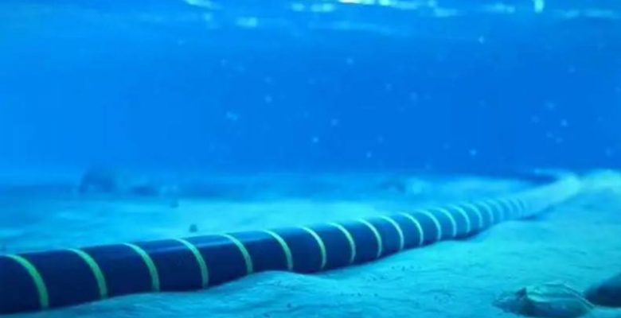
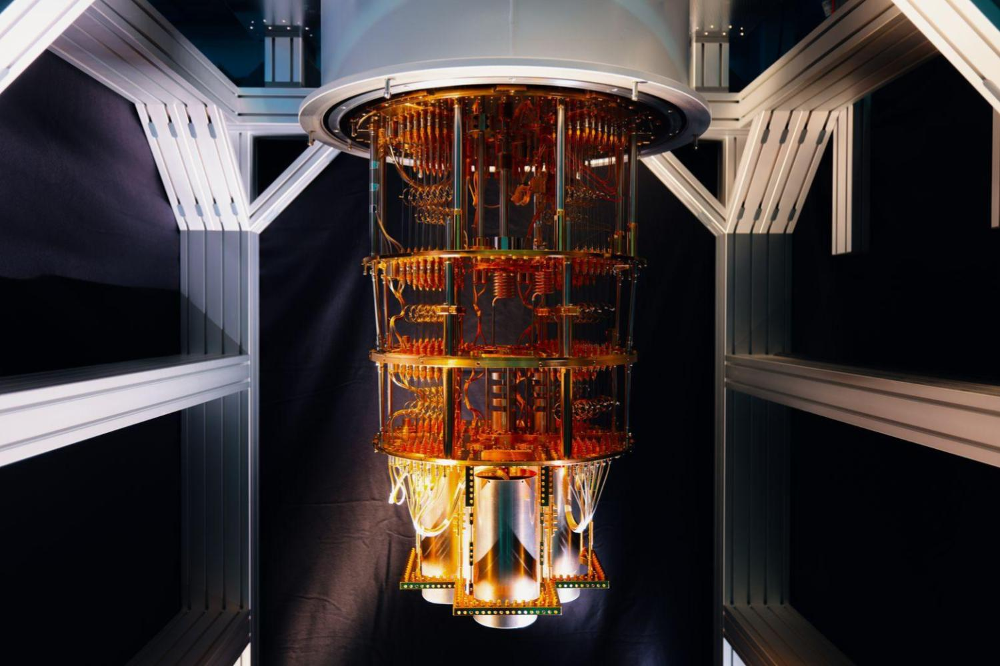
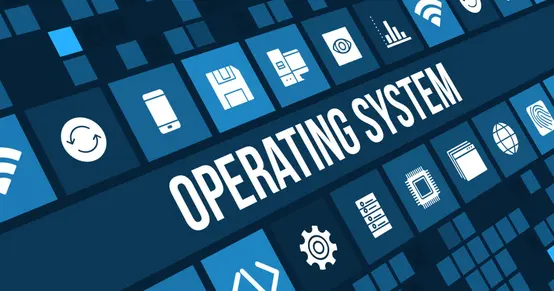
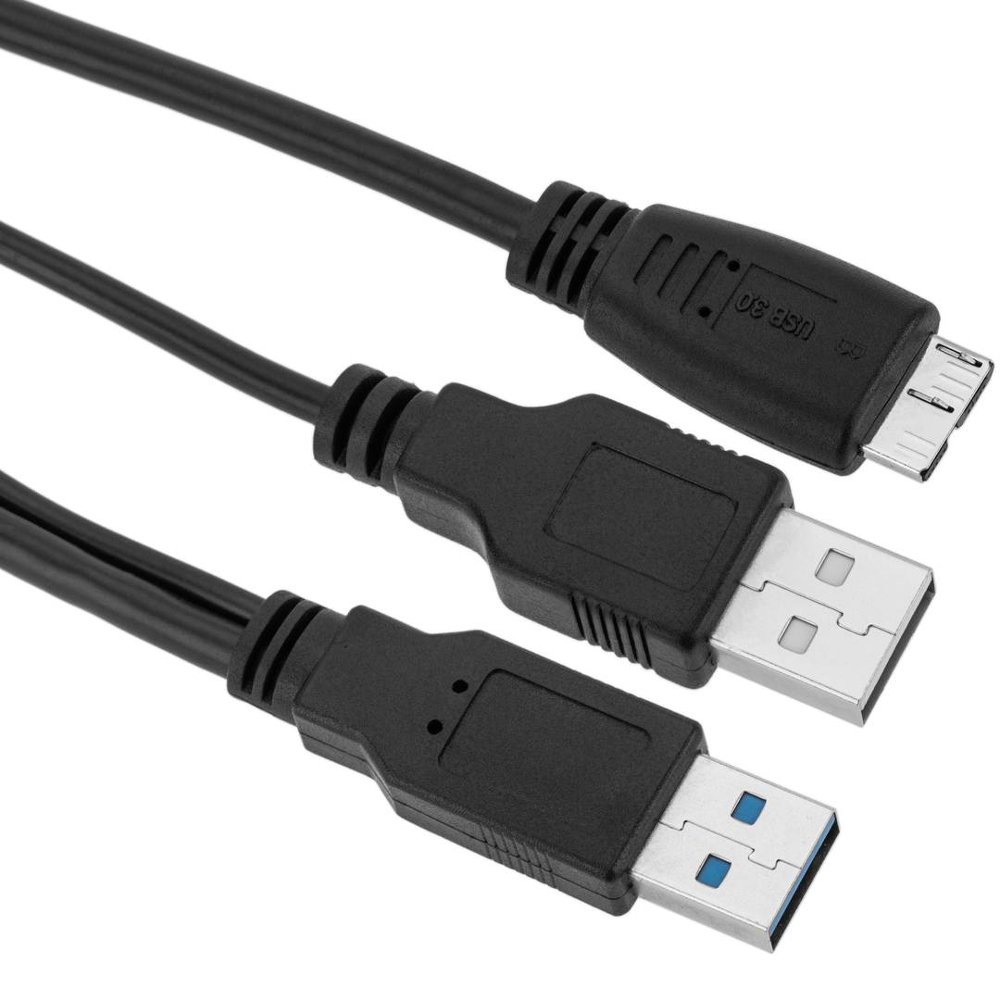
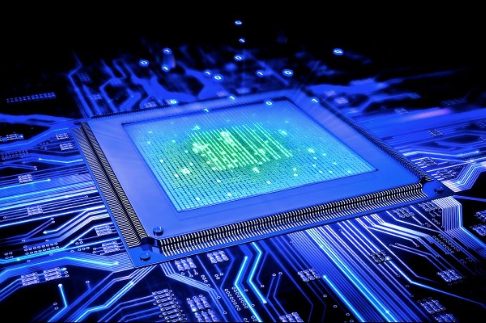
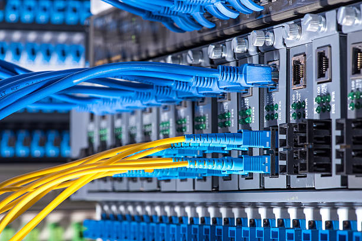

Découvrez 8 innovations majeures qui, selon nous, ont bouleversé l’histoire de l’informatique et façonné le développement technologique des 50 dernières années.
De la connexion mondiale via Internet aux processeurs ultra‑puissants, en passant par la fibre optique et les ordinateurs quantiques, ces inventions ont transformé notre façon de communiquer, de travailler et de vivre.
Plongez dans ce voyage à travers les technologies qui continuent de façonner notre futur numérique.

La fibre optique a changé notre façon de communiquer, connectant le monde à la vitesse de la lumière. Imaginez Internet plus rapide que jamais : découvrez comment cette innovation révolutionne nos réseaux !

Plus rapide, plus puissant, plus fou… l’ordinateur quantique transforme notre futur numérique.

Le système d’exploitation : le cerveau de votre ordinateur qui rend tout possible. Découvrez son rôle essentiel !
Le Darkweb : mystérieux, secret, fascinant… explorez l’autre face d’Internet.

Petite mais indispensable, l’USB a changé la manière dont nous utilisons nos gadgets.
Protéger ou surveiller ? Découvrez comment les antivirus ont transformé notre rapport aux données.

Plus rapides, plus puissants, plus intelligents : les processeurs repoussent les limites de l’informatique.

Internet et TCP/IP : le duo qui a connecté le monde. Découvrez comment nos données voyagent instantanément !